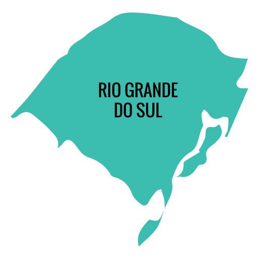
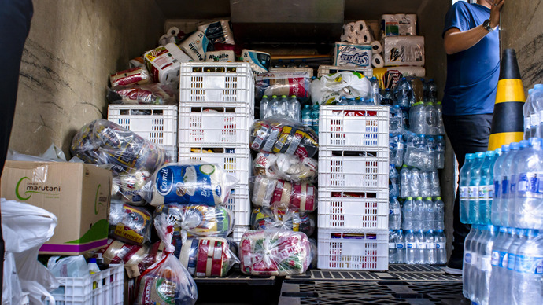

Clique na palavra "Rio Grande Do Sul"
O Rio Grande do Sul vive uma de suas piores tragédias climáticas. A chuva que persiste há pelo menos uma semana colocou o estado inteiro em situação de calamidade e deve continuar pelos próximos dias, causando mais estragos. O número de mortos já chega a 32, e dezenas de pessoas estão desaparecidas em meio às cheias.

Doe no QR Code
O que doar no primeiro momento?
.Quem tiver barcos ou qualquer tipo de embarcação para emprestar no resgate às famílias que ainda estão ilhadas pode entrar em contato com a Defesa Civil do Estado para disponibilizar os veículos.
.Doações de colchões (inclusive de academia), travesseiros, lençóis, cobertores, roupas e água.
.Doações em dinheiro pelos PIX da Prefeitura de Porto Alegre e do Governo do RS, pois os recursos financeiros serão disponibilizados para comprar mantimentos nos abrigos que estão acolhendo as pessoas desajoladas;

Como ser voluntário(a)?
Defesa Civil do Estado
.Voluntários (as) (incluindo empresas e instituições) que queiram ajudar em tarefas de organização, seleção e triagem das doações de ajuda podem preencher o cadastro no link: https://casamilitar-rs.com.br/voluntariado/.
Sindicato Médico do Rio Grande do Sul (Simers)
.Médicos que tenham interesse em ajudar ou se voluntariar nas regiões afetadas pela enchente devem realizar a inscrição e escolher o local de preferência para atendimento, indicando a disponibilidade de atuação em hospitais ou abrigos.